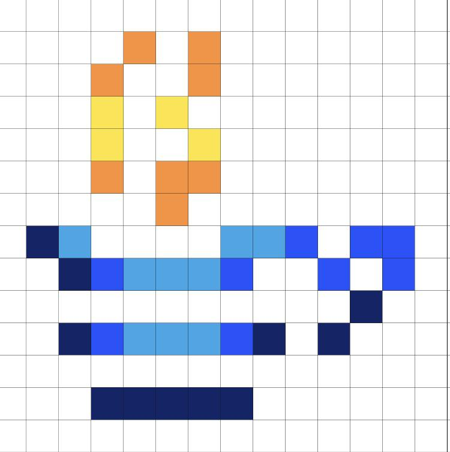

Биография
Оглавление
Детство и образование
Джеймс Гослинг родился 19 мая 1955 года в Канаде, недалеко от города Калгари. В 1977 году он получил степень бакалавра в Университете Калгари, а в 1983 году успешно защитил степень доктора философии (Ph.D.) в Университете Карнеги-Меллона. Его докторская диссертация стала очень важным шагом в изучении алгебраических ограничений.
James Gosling is the father of Java.
Карьера
Большую часть своей профессиональной жизни Гослинг посвятил работе в корпорации Sun Microsystems (с 1984 по 2010 год). Именно там он создал свой главный шедевр. Позже он успел недолго поработать в Google Amazon Web Services, а также в стартапе Liquid Robotics, который занимается созданием автономных океанических роботов.
Интересные факты про Джеймса Гослинга
- Изначально язык Java назывался Oak (Дуб) в честь дерева, росшего под окном офиса Гослинга.
- Позже язык переименовали в Java в честь сорта кофе, который программисты пили в огромных количествах во время разработки.
- Гослинг является офицером Ордена Канады.
